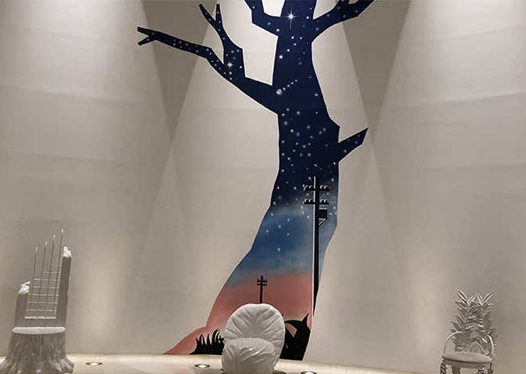

宮沢賢治童話村
宮沢賢治童話村は、今にもジョバンニや又三郎、山猫がでてきそうな賢治童話の世界で楽しく学ぶ「楽習」施設です。
「銀河ステーション」、「天空の広場」、「賢治の教室」、「妖精の小径」、「ふくろうの小径」、「山野草園」そしてメインに「賢治の学校」があります。
賢治の学校の中は、「ファンタジックホール」、「宇宙」、「天空」、「大地」、「水」の5つのゾーンに分かれています。また、ログハウス展示施設「賢治の教室」では、童話に登場する「植物」「動物」「星」「鳥」「石」に関する展示を行っています。
見学に要する時間は、「賢治の学校」が約15分、「賢治の教室」が約30分ほど。周辺の森にある妖精の小径、ふくろうの小径、山野草園を散策する場合は、もう少し時間が必要となります。ぜひ時間に余裕を持ってお越しください。